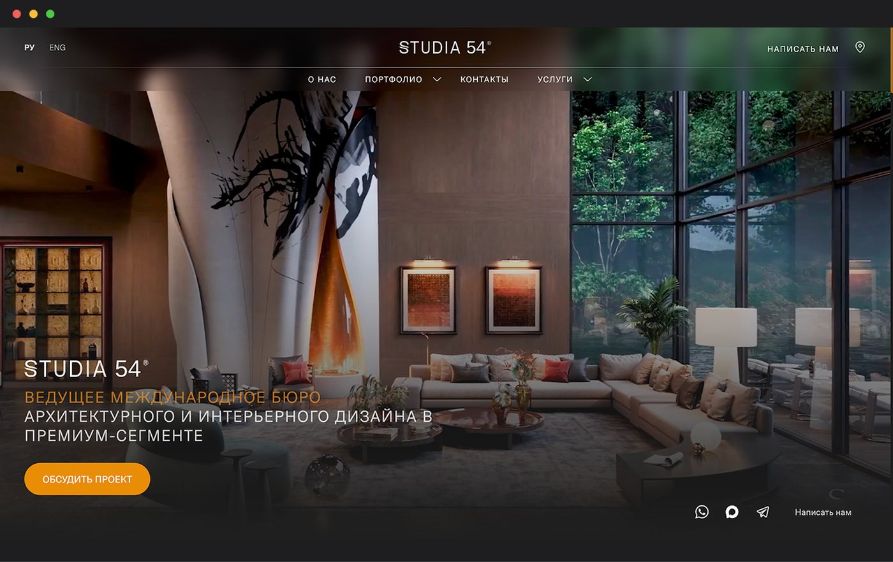

Редизайн корпоративного сайта архитектурно-дизайнерской студии с фокусом на улучшение пользовательского опыта, навигации и презентации проектов и услуг. Параллельно сайт развивался как инструмент продвижения и SEO.
Проектировала редизайн сайта: анализировала пользовательские сценарии и метрики, предлагала UX-улучшения, проектировала новые страницы и поддерживала визуальную систему. После запуска продолжила работу по данным Яндекс.Метрики.
Сайт содержал большое количество услуг и проектов, но пользователю было не всегда удобно быстро перейти к нужному направлению и разобраться в предложении студии. При этом было важно сильнее подчеркнуть преимущества проектов и сформировать единый узнаваемый образ бренда.
Упростить навигацию и взаимодействие с сайтом, сделать структуру услуг и портфолио понятнее, усилить визуальную подачу проектов и развивать сайт с учётом SEO-задач.
В рамках редизайна:
После запуска смотрела карты кликов и глубину скролла и проверяла гипотезы на живых данных, через 4 недели сравнивая «было» и «стало»:
25% → 40%
глубина прочтения главной
34% → 68%
доходят до третьего блока страницы услуг
25% → 54%
доходят до конца страницы услуг
Конверсия формы выросла на страницах услуг и контактов. Чтобы отделить эффект дизайна от сезонности и рекламы, сравнивала поведение внутри одного и того же источника трафика.
Сайт получил более цельную структуру и визуальный язык, более понятную навигацию между услугами и портфолио и новые точки входа для пользователей из поисковых систем. Редизайн одновременно решал UX-задачи и поддерживал стратегию развития сайта как инструмента продвижения студии.